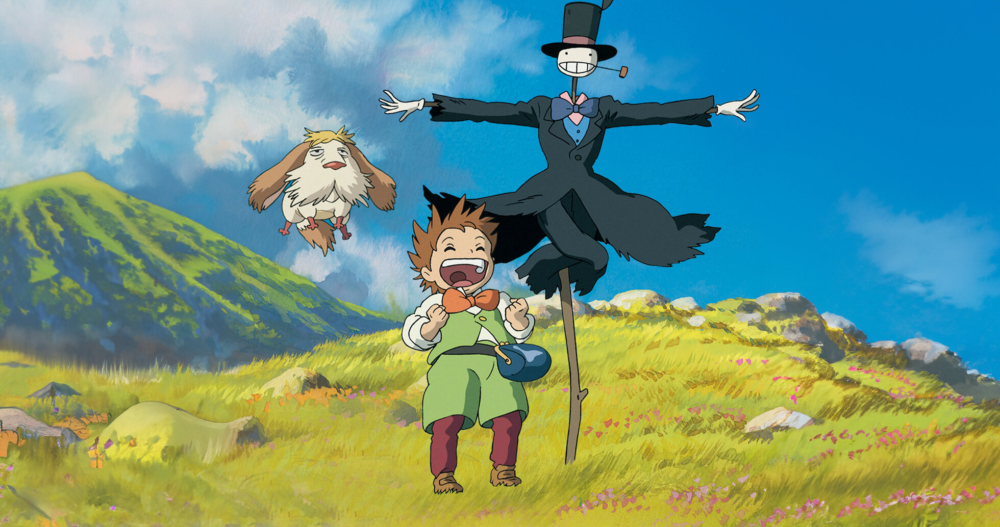
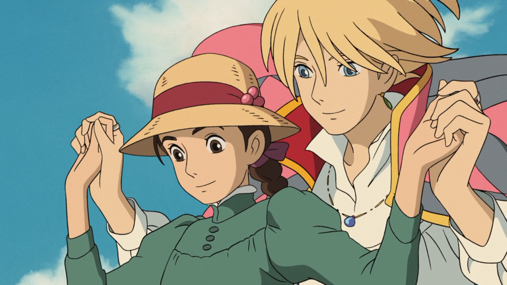

O Castelo Animado é uma animação do Studio Ghibli, dirigida por Hayao Miyazaki e inspirada no livro de Diana Wynne Jones. A obra mistura fantasia, magia e aventura em um universo visualmente encantador.

Este site tem o objetivo de apresentar informações sobre o filme O Castelo Animado, uma das obras mais marcantes do Studio Ghibli. O projeto reúne detalhes sobre a história do filme, seus personagens e os dubladores responsáveis por dar voz à animação.
Lançado em 2004 e dirigido por Hayao Miyazaki, O Castelo Animado é uma animação de fantasia reconhecida mundialmente por sua narrativa envolvente, visual artístico e elementos mágicos que conquistaram diferentes gerações.
